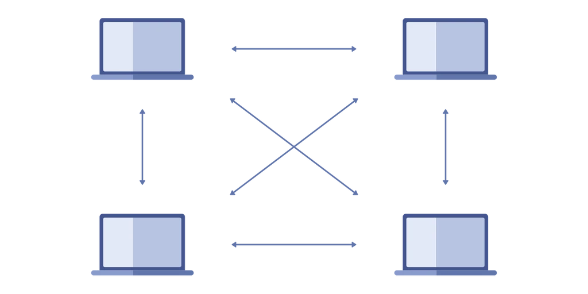
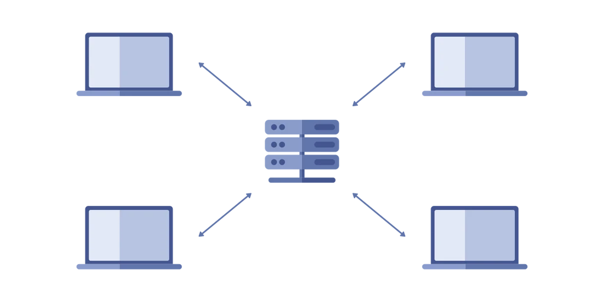

Many of the websites and services we use on a day to day basis are housed
and run on centralized servers. While centralized servers have their
beneifits, by virtue of being centralized they come with comprimises. A
centralized server means governments or individuals looking to intercept
certain traffic or shut down a service have a single target.
An anternative is the Peer-to-peer (P2P) network. In a P2P network users
talk directly to each other rather than through a centralized server.

An illustration of a Peer-to-peer Network
source

An illustration of a centralized Network
source
A full comparison between the two is beyond the scope of this piece. For
more in depth comparisons of Peer-to-peer and centralized networks as well
as examples of how Peer-to-peer networks are used check out these
articles:
Figuring out where to get the data you want, such as a video, file, or
website within a P2P network can be difficult as there isn't necessarily a
centralized system keeping track of what urls lead where. There are many
ways of searching for the desired data including many “deterministic”
approaches such as
the well known BitTorrent protocol. However S. Apel and E. Buchmann claim these approaches “leave aside that:
peers want to obtain queries at different rates, some keys are more popular
than others, and peers can be less reliable” (section 4).
To solve this problem S. Apel and E. Buchmann as well as others took inspiration from ants. Ants have to
deal with similar problems when searching for food. The food could be
anywhere and some food sources are better than others. To solve this problem
ants leave pheromones in their path. Future ants can then simply follow the
smelliest path to go where the most of their fellow ants have gone. This
allows them to quickly organize and accomplish complicated tasks
collaboratively without requiring a queen to control them all.
To explore this idea I decided to create a program that simulated an Anthill
inspired P2P network
Implementing an Anthill Inspired P2P Network
The ants pheromone system can be implemented in a P2P network in various
albeit similar ways, however I decided to use the approach taken by A.
Montresor and O. Babaoglu in the aptly named Anthill framework for the overall design, with some implementation details taken from the excellent Sebastian Lague Video on simulating ants and slime molds.
In this framework each "peer" or participant in the network is thought of as an Anthill with various ants
representing the tasks the anthill is capable of such as retrieving a website.
When these ants are called upon to carry out actions, they leave information
related to their current task at each anthill they visit. This data left
behind is the pheromones that can guide future ants trying to accomplish the
same task. Ideally, through this system efficient pathways to popular sites, files,
etc are formed so they are easier and take less time to find.
The simulation I created goes through the following steps
Create a "map" with circles of various colors to represent each nest
Begin iterating through the following steps
For each nest randomly decide whether to make a "request". This represents getting a website, downloading a file, sending a chat message etc.
If the nest is making a request, randomly choose another nest to make the to. This represents the destination of the request i.e. who you are sending the chat message too or who is hosting the website
Make ants (todo)
Citations:
Andrea, Harris. “Comparison of ‘Peer-to-peer’ Vs ‘Client-server’ Network
Models.” Networks Training,
www.networkstraining.com/peer-to-peer-vs-client-server-network. Accessed 3
Oct. 2022.
Apel, Sven, and Erik Buchmann. “Biology-inspired optimizations of peer-to-peer
overlay networks.” (2005): 199-205.
Montresor, Alberto, and Ozalp Babaoglu. “Biology-inspired approaches to
peer-to-peer computing in bison.” Intelligent Systems Design and Applications.
Springer, Berlin, Heidelberg, 2003. 515-522.